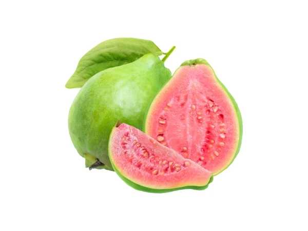

Psidium guajava 'Taiwan Pink'
Common Names: Taiwan Pink Guava, Thai Guava, Pearl Guava, Crispy Guava
Local Name: Taiwan Koiya (Tamil), Taiwan Amrood (Hindi)
Family: Myrtaceae
Origin: Taiwan (cultivar); species native to Central America
Plant Type: Perennial evergreen tree
Variety: Taiwan Pink — large fruit (200–500g), crispy white-pink flesh, mild sweet flavour
Average Lifespan: 25–40 years
| Growth Habit | Vigorous, upright to spreading evergreen tree; productive and fast-growing |
| Plant Size | 3–8 meters tall; canopy 4–6 meters wide |
| Leaves | Opposite, oblong-elliptic, 8–15 cm long, dull green with prominent veins; aromatic when crushed |
| Flowers | White, 4–5 petaled, 2–3 cm across with numerous stamens; borne singly or in clusters in leaf axils |
| Flower Characteristics | Fragrant; attract bees; bloom on new growth; can flower year-round in tropics |
| Fruit | Large round to pear-shaped, 200–500g; thick crispy flesh, mild sweet flavour, few seeds; apple-like texture |
| Fruit Color | Light green skin; white to light pink flesh |
| Seed Characteristics | Fewer seeds than traditional guava; small, hard, edible |
| Root System | Shallow to moderately deep fibrous root system; can sucker |
| Climate | Tropical to warm subtropical; frost-sensitive |
| Temperature Range | 20–35°C ideal; tolerates brief frost to −2°C (mature trees) |
| Rainfall Requirement | 800–2000 mm annually; tolerates dry periods |
| Soil Type | Well-drained loamy soil; adaptable to various soil types |
| Soil pH Preference | 5.0–7.0 |
| Sun Requirement | Full sun (6+ hours daily) for best fruiting |
| Spacing | 4–6 meters between trees; closer for high-density planting |
| Irrigation Method | Drip irrigation; regular watering during fruiting |
| Water Requirement | Moderate; consistent moisture for large fruit size |
| Can it Grow in Pots? | Yes, in large pots (30+ liters); will produce smaller fruit |
| Fertilizer Schedule | Every 2–3 months; increase during fruiting season |
| Recommended Organic Fertilizers | FYM, vermicompost, bone meal, potash-rich organic fertilizers |
| Pesticide Frequency | Regular monitoring; fruit bagging recommended for premium fruit |
| Recommended Organic Pesticides | Neem oil, fruit fly traps, insecticidal soap; fruit bagging for pest-free fruit |
| Mulching Practice | Organic mulch around base; keep away from trunk |
| Training System | Open center system; maintain 3–4 main scaffolds |
| Pruning Time | After harvest; tip-prune to induce new flowering shoots |
| How to Prune | Tip-prune new growth to promote branching; remove water sprouts; thin fruit for larger size |
| Common Pests | Fruit fly, guava moth, mealybug, scale insects, birds |
| Common Diseases | Anthracnose, guava wilt (Fusarium), algal leaf spot, fruit rot |
| Disease Prevention & Remedies | Good drainage, proper spacing, copper fungicide, remove infected material, fruit bagging |
| Flowering Months | Year-round in tropics; main flush after pruning |
| Fruiting Season | Year-round with proper management; 3–4 months after flowering |
| Days to Harvest | 90–120 days from flowering |
| Harvest Indicators | Fruit turns light green-yellow; slight give when pressed; mild sweet aroma |
| Average Yield per Plant | 30–80 kg per tree per year (well-managed mature tree) |
| Pollination Type | Self-fertile; insect-pollinated |
| Pollination Notes | Bees are primary pollinators; self-fertile — single tree produces fruit |
| Pollination Details | Self-fertile; bees and wind assist pollination |
| Propagation by Seeds | Seeds germinate in 2–4 weeks; seedlings variable — not true-to-type |
| Propagation by Cuttings | Air layering (marcotting) is preferred; stem cuttings with rooting hormone |
| Propagation by Grafting | Veneer or cleft grafting on seedling rootstock; ensures true-to-type fruit |
| Water Usage | Moderate; efficient with drip irrigation |
| Soil Conservation Practices | Root system holds soil; mulching prevents erosion |
| Organic Practices Used | Fruit bagging reduces pesticide need; organic fertilization common |
| Companion Plants | Leguminous cover crops, marigolds, basil |
| Biodiversity Benefits | Flowers support pollinators; fruit feeds birds and wildlife |
| Commercial Production Regions | Taiwan, Thailand, India, Vietnam, Philippines, Indonesia |
| Market Uses | Premium fresh fruit, supermarket sales, export market |
| Processing Uses | Fresh eating (primary), juice, smoothies; best consumed fresh for crispy texture |
| Market Value (Approx.) | ₹60–200 per kg; premium over traditional guava varieties |
| Symbolism | Symbol of modern tropical fruit breeding; represents Taiwan's horticultural innovation |
| Traditional Uses | Guava leaves used in traditional medicine across Asia for diarrhoea and diabetes management |
| Calories | 68 kcal per 100g |
| Dietary Fiber | 5.4 g per 100g |
| Vitamin C | 228 mg per 100g (4× more than oranges) |
| Vitamin A | 624 IU per 100g |
| Iron | 0.26 mg per 100g |
| Potassium | 417 mg per 100g |
| Antioxidants | Lycopene (pink flesh), beta-carotene, polyphenols, flavonoids |
| Other Key Nutrients | Folate, manganese, copper, niacin, pantothenic acid |
| Anxiety & Sleep | Guava leaf tea has mild calming properties |
| Immune Support | Exceptionally high Vitamin C content — powerful immune booster |
| Anti-inflammatory Properties | Leaf extracts show anti-inflammatory and antimicrobial activity |
| Heart Health | High potassium and fiber support cardiovascular health; may lower blood pressure |
| Digestive Health | High fiber aids digestion; guava leaf tea used for diarrhoea and blood sugar management |
Disclaimer: Information provided is for educational purposes only and not a substitute for medical advice.
Add your field observations here.